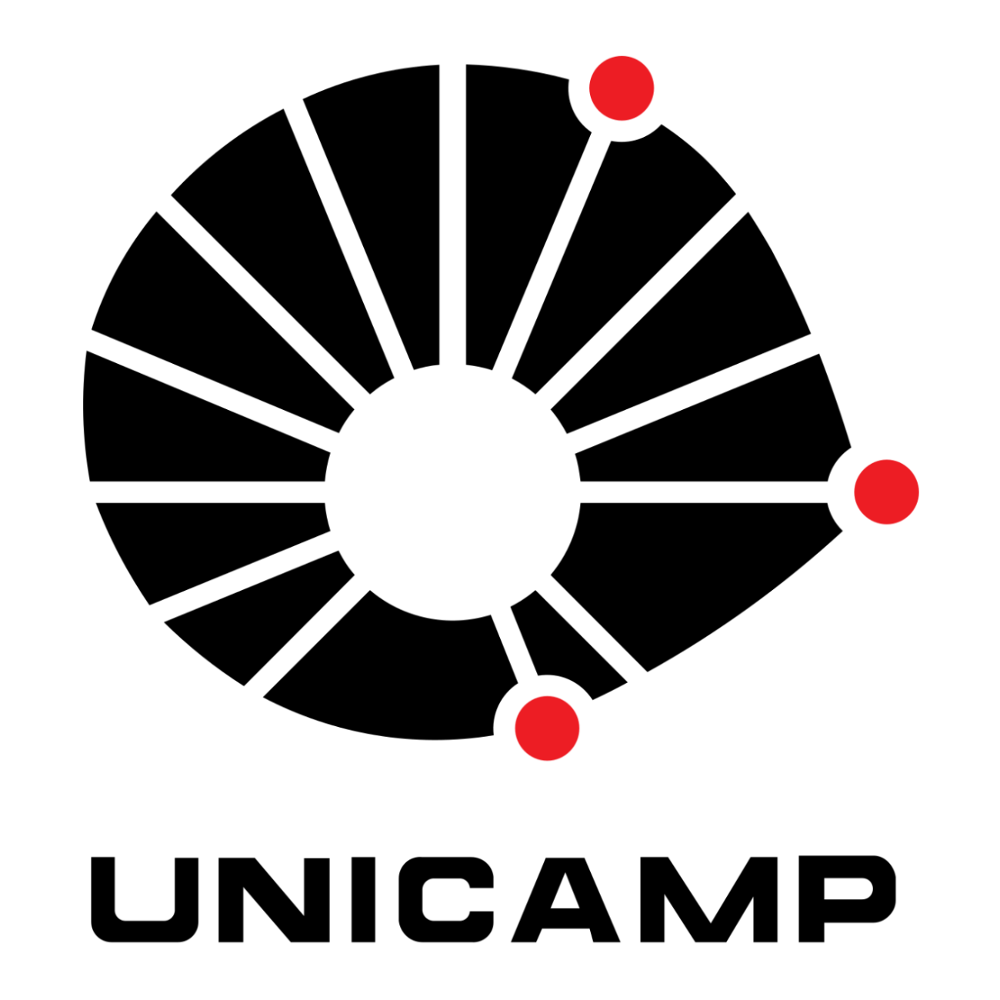
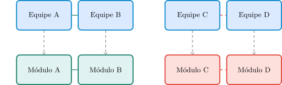
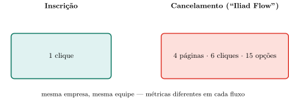
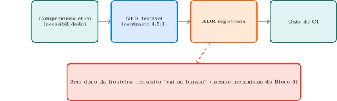

Computação e Sociedade
2026-08-30
Aulas 1–3: responsabilidade recai sobre o profissional individual — seguir um código (Aula 3), reconhecer atores (Aula 1), avaliar consequências (Aula 2).
Hoje: e quando o problema não está em nenhuma decisão individual, mas na própria estrutura de como o time se organiza para construir o sistema?
Dica
Relembrando a Aula 1: o mapa de atores já mostrava que quem fala com quem, e quem decide o quê, faz parte do sistema sociotécnico — não é um detalhe de gestão de projeto alheio à engenharia.
Conway (1968), p. 31 — tradução livre
“Oito pessoas foram encarregadas de produzir um compilador de COBOL e um de ALGOL. Cinco pessoas foram alocadas ao COBOL, três ao ALGOL. O compilador de COBOL resultante rodava em cinco fases; o de ALGOL, em três.”
Conway (1968), p. 31 — o segundo exemplo
“Duas forças militares foram instruídas a desenvolver um sistema de armas comum. Depois de grande esforço, produziram uma cópia de seu organograma.”
Repare: o número de fases do compilador é idêntico ao número de pessoas do subgrupo que o construiu. Nenhuma especificação técnica pediu isso. Coincidência? (Bloco 3 formaliza a resposta.)
Cinco pessoas, cinco fases: coincidência?
O compilador de COBOL, construído por cinco pessoas, saiu com cinco fases; o de ALGOL, construído por três pessoas, saiu com três fases. Isso foi coincidência, ou o número de pessoas alocadas causou o número de fases do software? Se causou, por qual mecanismo, já que nenhuma especificação técnica dizia “faça cinco fases”?
Dica: pense no que cada subequipe precisaria negociar com a outra para que as peças do compilador se encaixassem — e no que aconteceria com essa negociação se a divisão de tarefas fosse diferente.
Dica
Retomando: o número de pessoas causou o número de fases — via a necessidade de comunicação (ou falta dela) entre subequipes. É exatamente isso que o Bloco 3 formaliza.
A divisão em papéis não é burocracia: cada um exige um raciocínio diferente (negócio, percepção humana, corretude de código, falha em escala) — poucas pessoas dominam todos ao mesmo tempo.
Um pedido “simples” — “quero poder cancelar um pedido depois de finalizado” — passa por essa cadeia de papéis antes de virar código.
Usuário final → formula em linguagem cotidiana, sem saber o que é tecnicamente viável. Produz um ticket (registro do pedido, com número de rastreamento).
PM/PO → traduz em “necessidade de negócio”, prioriza frente a outros pedidos. Produz um item de backlog (lista viva e priorizada do que a equipe pode construir).
UX → traduz em telas, fluxos, textos de erro concretos. Produz wireframes (esboço de tela, sem estilo visual) e protótipos (já clicáveis, simulam o uso).
Dev → traduz o fluxo em código, estruturas de dados, integrações. Produz o código-fonte e as decisões de modelagem que o sustentam.
QA → traduz o comportamento esperado em casos de teste — revela casos-limite (pedido já pago? já enviado?). Produz um plano de testes.
SRE/Operações → traduz em requisitos de confiabilidade em produção. Produz métricas de alerta e um plano de contingência.
Stakeholders de negócio → podem vetar/alterar por custo ou política comercial, sem relação com o usuário. Produz uma decisão de aprovação/veto, geralmente sem registro formal do motivo.
Um PM que prioriza “cancelamento” mais baixo do que o usuário gostaria já mudou o resultado antes de qualquer código existir.
Um QA que só testa o caminho feliz deixa passar um requisito que existia desde o início — “cancelar depois de pago” — mas que se perdeu ao longo da cadeia.
Dica
Nada disso exige más intenções de nenhum papel — é uma propriedade estrutural de qualquer cadeia de tradução com mais de um elo.
Um “requisito” não é um dado bruto esperando para ser “descoberto” — é o produto final de uma cadeia de pessoas, cada uma traduzindo só parte do quadro.
Falta nomear dois mecanismos formais:
O jogo do telefone dos requisitos
Se você entrevistasse cada pessoa na cadeia entre “o que o usuário pediu” e “o que virou código” — PM, UX, dev, QA, SRE — e perguntasse “o que o usuário quer”, você esperaria receber a mesma resposta de todos? Se as respostas divergissem, qual delas seria a “certa”?
Dica: pense em cada papel como um tradutor que só vê parte do quadro — e o que cada um adiciona, ou perde, ao traduzir para a etapa seguinte.
Dica
Retomando: não existe resposta “mais certa” — cada papel vê e traduz parte real do quadro. O ganho de especialização tem um custo de tradução; a aula não recomenda eliminá-la, mas reconhecê-la.
(a) Construir uma interface entre duas partes de um sistema exige comunicação entre quem constrói cada parte.
(b) Organizações minimizam custo de comunicação alinhando equipes a subsistemas.
Conway (1968), p. 29
“Não existe uma coisa como um grupo de design que seja, ao mesmo tempo, organizado e imparcial.” (tradução livre)
1. Módulos que interagem, mas cujos times não se falam → interface malfeita/inconsistente.
2. Para reduzir custo de comunicação, a organização alinha a fronteira dos times à dos módulos.
3. Resultado: a arquitetura espelha o organograma — não por design deliberado, mas por pressão estrutural.
No compilador do Bloco 1: a divisão de pessoas (5+3) precedeu e causou a divisão de fases (5+3), não o contrário.
Conway (1968), p. 31
“Organizações que projetam sistemas são obrigadas a produzir projetos que são cópias das estruturas de comunicação dessas organizações.” (tradução livre)

Dica
Comunicação entre equipes → interface bem definida. Sem comunicação → interface inconsistente. (Redesenho da ideia de Conway, não reprodução literal de figura.)
Se a arquitetura tende a seguir o organograma, então, para mudar a arquitetura de forma duradoura, muitas vezes é preciso mudar primeiro a estrutura do time.
Aviso
Reescrever um monólito em microsserviços sem tocar na organização das equipes tende a falhar: a pressão de comunicação empurra a arquitetura de volta ao formato antigo — as pessoas que precisam se falar continuam as mesmas.
Consertar código, ou consertar organograma?
Se a Lei de Conway está certa — a arquitetura tende a copiar a estrutura de comunicação de quem constrói —, o que isso implica sobre tentar consertar um sistema mal-arquitetado só reescrevendo código, sem tocar em como as equipes estão organizadas?
Dica: pense na Manobra Inversa de Conway — o que precisaria mudar primeiro para que uma nova arquitetura se sustentasse, e não fosse revertida pela própria pressão estrutural da organização?
Dica
Retomando: reescrever código sem tocar na organização tende a falhar — a pressão estrutural (premissa b) empurra a arquitetura de volta, pois as pessoas que precisam se falar continuam as mesmas.
Bloco 3: a arquitetura copia a comunicação de quem constrói.
Este bloco: a etapa que decide o que vai ser construído — elicitação de requisitos — também não é neutra.
Aviso
Processo clássico de 4 etapas (Cap. 4 de Sommerville): conhecimento geral consolidado, sem citação literal verificada. A conexão com Data Feminism é análise nossa.
Elicitação: entrevistas, workshops com vários stakeholders juntos, observação etnográfica, protótipos descartáveis — não uma conversa única.
Análise/negociação: priorização estruturada (MoSCoW, Kano), matrizes de trade-off, “o que acontece se isto não for feito?”.
Especificação: casos de uso, histórias de usuário + critérios de aceite testáveis, requisitos numerados e rastreáveis.
Validação: revisões estruturadas do documento, walkthroughs passo a passo, protótipos de baixa fidelidade — não é testar código.
Dica
Só com o mecanismo real nomeado a pergunta social fica precisa: em cada uma dessas atividades, quem participa — e quem fica de fora?
| Etapa | Padrão | Decisão social escondida |
|---|---|---|
| Elicitação | Entrevistar usuários | Quem conta como “o usuário”? |
| Análise/negociação | Resolver conflitos | Quem tem voz na mesa — normalmente quem paga |
| Especificação | Documentar o acordado | Requisitos sem voz ficam implícitos/ausentes |
| Validação | Confirmar com stakeholders | Confirma os mesmos pontos cegos de sempre |
D’Ignazio & Klein (2020), p. 53
“Dados são sempre o produto de relações sociais desiguais […]. Como diz Ben Green: ‘o que o aprendizado de máquina realmente faz é prever o passado.’” (tradução livre)
Se dados nunca são neutros, requisitos levantados a partir de “o que os usuários dizem” carregam a mesma assimetria histórica.
1. Coletar — compilar contra-dados diante de ausência/negligência institucional.
2. Analisar — auditar algoritmos, demonstrar resultados desiguais.
3. Imaginar — ir além do resultado desigual, atacar a causa raiz.
4. Ensinar — quem faz ciência de dados importa; capacitar recém-chegados.
(D’Ignazio & Klein, 2020, p. 53 — tradução livre)
D’Ignazio & Klein (2020), pp. 49–50
“‘Onde Motoristas Atropelam Crianças Negras na Rota Pointes-Downtown.’ […] Ninguém mantinha registros […]. ‘Não conseguíamos obter aquela informação’, explica Gwendolyn Warren.” (tradução livre)
A comunidade já sabia do problema por experiência vivida — faltava poder para transformar essa experiência em dado formal.
Interface técnica sem comunicação entre equipes → malformada.
Requisito sem ninguém com voz para levá-lo à mesa de negociação → fica de fora da especificação.
Dica
Em nenhum dos dois casos há uma decisão explícita de excluir — é ausência estrutural de representação no processo.
Quem é “o usuário”, de fato?
Quando uma equipe de produto diz que vai “levantar os requisitos entrevistando os usuários”, quem exatamente conta como “o usuário” nessa frase — e quem, na prática, tende a ficar de fora dessa lista, mesmo sendo afetado pelo sistema?
Dica: pense no caso do DGEI — quem tinha o problema não era, necessariamente, quem tinha acesso ao processo formal de registrar ou comunicar esse problema.
Dica
Retomando: “o usuário” da elicitação de requisitos não é dado — é construído por quem tem acesso ao processo. O DGEI é o caso-limite de alguém sem esse acesso, forçado a criar seu próprio registro.
Bloco 4: exclusão sem intenção explícita — ninguém decidiu deixar o requisito de fora, faltou estrutura de representação.
Aqui: às vezes a fricção nasce de uma decisão deliberada — o papel de “Stakeholders de negócio” (Bloco 2) otimizando por uma métrica que não é o bem-estar do usuário.
Você já sentiu isso: assinar leva um clique; cancelar exige várias telas de “tem certeza?”, ofertas de última hora, botão discreto.
Aviso
Taxonomia de Gray et al. (2018, CHI) — artigo atrás de paywall, sem cópia de acesso aberto encontrada; nomes/descrições vêm de fontes secundárias sobre o artigo, não citação literal. Caso Amazon/FTC abaixo tem verificação mais forte (múltiplas fontes independentes).
Insistência — interrompe repetidamente (pop-up de avaliação que volta sempre).
Obstrução — dificulta deliberadamente um processo já decidido (“Motel de Baratas”: fácil entrar, difícil sair).
Sonegação — esconde informação até o último momento (taxa extra só na última tela do checkout).
Interferência de Interface — manipula a hierarquia visual (“Aceitar todos” grande, “Rejeitar” minúsculo).
Ação Forçada — exige algo sem relação com o pedido original (conta + contatos só para uma função básica).
FTC processou a Amazon: inscrever no Prime, 1–2 cliques. Cancelar, processo interno batizado de “Iliad” (a longa guerra de Troia).
Denúncia da FTC — tradução livre
“Quatro páginas, seis cliques e quinze opções” para cancelar — pontuado por avisos de benefícios perdidos e descontos de última hora.
Resultado (2025): acordo de US$ 2,5 bilhões — maior penalidade civil já obtida pela agência por violação de norma sobre assinaturas.
Uma tela de confirmação isolada (“tem certeza?”) não é, por si só, um dark pattern — pode ser proteção legítima contra clique acidental.
O que caracteriza é a assimetria deliberada: o mesmo time capaz de fazer inscrever = 1 clique escolheu fazer cancelar = 6 cliques. Não é limitação técnica — é escolha alinhada a uma métrica.
Dica
Blocos 2–4: resultado indesejado por ausência estrutural. Aqui: por presença deliberada — alguém decidiu otimizar contra o usuário.
Se a fricção pode ser projetada deliberadamente contra o usuário…
…o mesmo maquinário de tradução — de intenção abstrata a comportamento concreto do sistema — pode apontar na direção contrária, a favor do usuário?
É a pergunta que o Bloco 6 responde.

Quem decide o quanto de fricção você sente?
Se a mesma equipe de engenharia que constrói o fluxo de inscrição também é, tecnicamente, capaz de construir um fluxo de cancelamento igualmente simples, o que explica a diferença de fricção entre os dois fluxos, se não é limitação técnica?
Dica: volte à tabela de papéis do Bloco 2 — qual papel específico tem o poder de “vetar ou alterar” um fluxo “por razões que nada têm a ver com o usuário”?
Dica
Retomando: a diferença de fricção entre dois fluxos tecnicamente equivalentes revela a métrica que a equipe responsável escolheu otimizar — nem sempre essa métrica coincide com o interesse do usuário.
Value Sensitive Design (VSD) — Design Sensível a Valores (Steen, 2022, Cap. 18): método que coloca valores no centro do processo de inovação, permitindo negociá-los explicitamente entre stakeholders.
Steen (2022), Cap. 18, p. 154
“VSD permite que diversos interessados expressem seus valores e os combinem produtivamente durante o processo de inovação.” (tradução livre)
Steen (2022), pp. 155–156
“Investigações empíricas […] resultam em requisitos (tentativos) para o sistema que está sendo desenvolvido.” (tradução livre)
Repare: as investigações resultam em requisitos, não em princípios soltos. Falta um passo além: do requisito ao código e ao processo.
1. NFR testável — “acessível a baixa visão” → “contraste mínimo 4.5:1 em todo texto” (verificável, sim/não).
2. ADR registrada — decisão concreta que implementa o NFR + por que foi tomada, preservada para quem vier depois.
3. Gate de CI — checklist/teste automatizado que bloqueia regressão — sem isso, uma mudança futura quebra o compromisso em silêncio.

Aviso
NFR e ADR não bastam por si só: sem gate que impeça automaticamente regressão, e sem dono claro da fronteira, o compromisso sobrevive só enquanto alguém se lembrar dele.
“Acessibilidade” é mais rico que “contraste 4.5:1” — a métrica captura uma parte operacionalizável do valor, não o valor inteiro.
Dica
Por isso o VSD insiste em investigações iterativas, não um checklist único: o NFR de hoje pode precisar ser revisitado quando o contexto (ou o entendimento do valor) mudar.
O que faltou entre a reunião e o código?
Uma equipe decide, em uma reunião, que “o sistema deve ser acessível a usuários com baixa visão”. Seis meses depois, uma nova funcionalidade quebra essa promessa sem que ninguém perceba, até que reclamações cheguem. O que, entre a reunião e o código, faltou para que isso não acontecesse?
Dica: pense na diferença entre “documentar uma decisão” (ADR) e “impedir automaticamente que ela seja violada” (gate de CI) — e no que cada um resolve, ou não, sozinho.
Dica
Retomando: faltou o passo de NFR testável + gate de CI — a reunião produziu intenção (nível de ADR, na melhor hipótese), não proteção automática contra regressão futura.
1. Por que a arquitetura copia o organograma? Construir uma interface exige comunicação; organizações minimizam custo de comunicação alinhando equipes a subsistemas — efeito colateral estrutural, não acidente nem projeto deliberado.
2. Elicitar requisitos é neutro, ou social? É social: cada etapa envolve decisão sobre quem tem voz — dados e requisitos nunca são extração neutra, são produto de relações sociais desiguais anteriores.
3. Como um compromisso ético vira algo concreto? Três traduções: NFR testável → ADR registrada → gate de CI — cada uma reduz a distância entre intenção e comportamento real em produção.
4. Que decisões de processo mudam o resultado técnico? Como o time se organiza, quem participa da elicitação — e quem é o “dono” de uma fronteira: sem dono, interface técnica e compromisso ético caem no buraco do mesmo jeito.
5. Fricção contra o usuário: acidente, ou deliberada? As duas formas acontecem: ausência estrutural (Blocos 3–4) e presença deliberada (Bloco 5, dark patterns) — Amazon/FTC mostra a segunda em escala real, com consequência regulatória.
O que mais deixa marca sem ninguém decidir?
Esta aula mostrou três mecanismos — Lei de Conway, elicitação de requisitos, e dark patterns — pelos quais decisões de processo e organização produzem consequências técnicas concretas. Que outro tipo de decisão “não técnica” você imagina que também deixa marca direta no sistema final, mesmo sem nenhuma linha de código específica prevendo isso?
Dica: pense em decisões sobre onde a equipe está localizada, em que fuso horário, ou sobre como o orçamento é dividido entre módulos — nenhuma delas é uma decisão “de código”, mas todas moldam o resultado técnico.
Dica
Ponte para a Aula 5: se decisões “só de processo” já mudam o resultado técnico assim, decisões de arquitetura — quantos serviços, onde rodam — têm também consequência material e ambiental real. É por aí que a Parte 2 do curso começa.
UNICAMP — Instituto de Computação